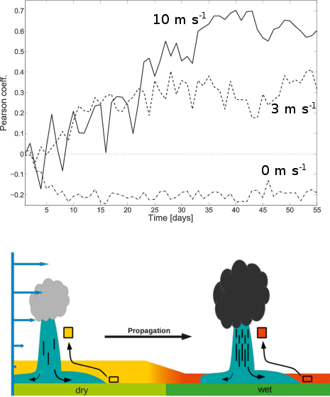

The top panel shows a timeseries of the spatial correlation between the soil saturation in the morning and the subsequent precipitation during the afternoon. Shown are three cases: 10, 3, and 0 m/s mid-tropospheric flow. The negative correlation pinpoints a negative SM-P feeback without background flow. The mechanism responsible for the positive SM-P feeback in situations with background flow is sketched in the bottom panel. Convection is preferentially triggered over dry soil patches and advection results in rainout over wet soil patches.
The dependence of the soil moisture - precipitation (SM-P) feeback on the background wind speed is studied using a cloud-resolving framework. The findings highlight the role of the midtroposheric flow: The presence of a background flow results in a positive feedback (rain falls preferentially onto relatively moist soil patches) while the feedback is negative without background flow. A conceptual mechanisms is proposed to explain this behavior.
Why do we care?
The sign and magnitude of the SM-P feedback is key to regional precipitation particularly during synoptically "blocked" situations when the interaction with the surface dictates the overall convective rainfall amount. Even though the increase of global mean precipitation with global mean temperature is energetically constrained, the regional response may get damped or amplified depending on local mechanisms such as the SM-P feedback.
How do we approach this?
An idealized cloud-resolving framework is used to simulate the SM-P feedback under the influence of different mid-tropospheric wind speeds. The COSMO model solves the compressible equations and parameterizations for radiative transfer, microphysics, turbulent mixing, and soil processes are included in these simulations. To mimic large-scale advection the wind and thermodynamic profiles are relaxed toward prescribed profiles in the upper troposphere. Simulations are integrated into a diurnal equilibrium (i.e., domain-mean diurnal cycle remains invariant after ca. 20 day).
What do we find?
The positive expression of the feedback is associated with the initiation of convection over dry soil patches, but the convective cells then propagate over wet patches where they strengthen and preferentially precipitate. The negative feedback may occur when the wind profile is too weak to support the propagation of convective features from dry to wet areas. Precipitation is then generally weaker and preferentially falls over dry patches. The results highlight the role of the mid-tropospheric flow in determining the sign of the feedback. A key element of the positive feedback is the exploitation of both low convective inhibition (CIN) over dry patches (for the initiation of convection) and high CAPE over wet patches (for the generation of precipitation).
{kind=link}